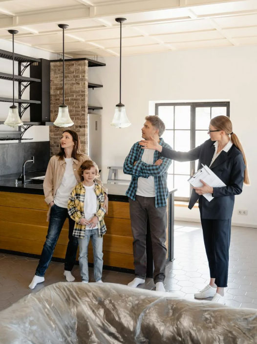
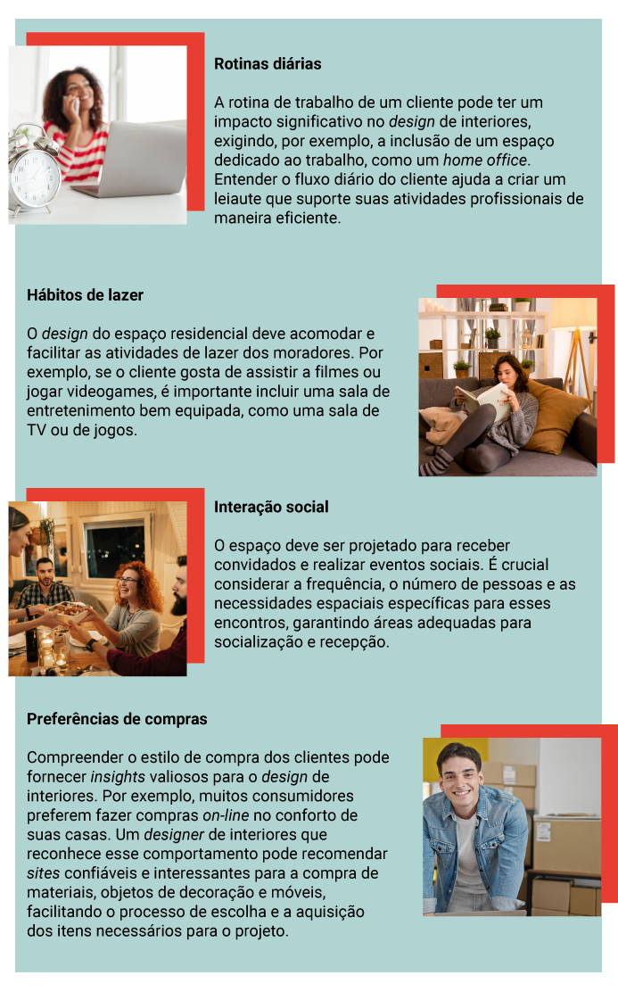

Para um designer de interiores que busca oferecer serviços de consultoria de qualidade, compreender profundamente o público-alvo é essencial. Conhecer as necessidades, as especificidades, os comportamentos e os perfis dos clientes permite ao designer desenvolver soluções personalizadas e eficazes. Nesse contexto, é vital entender bem o cliente para minimizar ruídos e problemas ao longo do processo de design. Mas como outros designers abordam essas questões em seus projetos?
A empatia, de acordo com Brown (2020), é crucial nesse processo. Ele descreve empatia como a capacidade de se colocar no lugar do outro, vendo as pessoas como indivíduos com emoções e experiências únicas, e não apenas como números. O autor argumenta que os designers devem "tomar emprestada a vida dos outros para inspirar novas ideias", reconhecendo os comportamentos diferentes como estratégias diversas para lidar com o mundo. Para Brown, os designers devem construir essas pontes de insights, tentando ver o mundo por meio das expectativas dos outros e sentir suas emoções.
Atualmente, ao projetar residências e outros tipos de estabelecimentos comerciais ou de trabalho, os designers devem estar focados em proporcionar uma experiência enriquecedora para os habitantes dos espaços. Essa experiência inclui não apenas as sensações e reações físicas e fisiológicas que o design do ambiente evoca, mas também a capacidade de adaptar o espaço para melhorar a saúde e o bem-estar (Gurgel, 2023).
Designer de interiores em processo criativo
Fonte: Pexels (2024)
Fotografia ilustrativa. Mulher branca, de cabelos lisos e com corte médio, vestindo camisa branca. Está sentada à mesa de trabalho, mexendo no celular e sorrindo para a tela, com alguns desenhos e rascunhos sobre a mesa.
Para você entender mais do universo do cliente, este conteúdo abordará os seguintes aspectos: necessidades, especificidades, comportamentos, perfis de clientes e criação de personas, proporcionando uma base sólida para a prática de design de interiores centrado no usuário. Que tal começar?
As necessidades dos clientes são o ponto de partida de qualquer projeto de design de interiores. Elas podem variar amplamente, englobando desde funcionalidade e conforto até estética e sustentabilidade, dependendo dos pedidos e das preferências dos clientes. Atender a essas necessidades e desenvolver soluções que beneficiem o cliente é essencial para o sucesso de qualquer projeto de design.
Ao projetar, é fundamental elaborar um "resumo do problema". Segundo Lawson (2011), isso envolve o estudo e a compreensão das exigências do cliente, a criação de uma ou mais soluções, a testagem dessas soluções contra critérios explícitos ou implícitos e a transmissão do projeto aos clientes e construtores.

Designer de interiores atendendo a clientes
Fonte: Pexels (2024)
Uma família, formada por um homem, uma mulher e um menino, conversam com uma mulher que mostra um apartamento desocupado. Eles estão em um ambiente identificado como cozinha e sala integrados.
Considerando isso, reconhece-se a importância de entender o universo do cliente para o qual se está trabalhando, destacando a existência de necessidades físicas. As necessidades físicas são mais racionais, mensuráveis e tangíveis e dialogam com as demandas reais dos clientes (Pacheco, 2023).
Para um designer de interiores, compreender essas necessidades físicas é crucial para o desenvolvimento de soluções que não apenas atendam às expectativas dos clientes, mas que também sejam práticas e funcionais. Além disso, esse entendimento facilita a comunicação clara entre o designer, os clientes e os construtores, garantindo que todos os aspectos do projeto sejam executados de maneira coesa e eficiente. A seguir, estão as principais necessidades físicas que devem ser atendidas:
Capacidade do espaço de atender às necessidades práticas dos usuários. Isso envolve a organização eficiente dos móveis, a disposição adequada dos ambientes e a facilidade de circulação. Um espaço funcional deve ser prático e adaptável às atividades cotidianas dos moradores, considerando a disposição dos móveis, a acessibilidade e a ergonomia.
Criação de ambientes que proporcionem bem-estar físico e emocional. O conforto é influenciado pela escolha de materiais agradáveis ao toque, ergonomia dos móveis, iluminação adequada e controle de temperatura. Um ambiente confortável promove relaxamento e bem-estar, contribuindo para a qualidade de vida dos ocupantes.
Apelo visual do ambiente. A estética envolve o uso harmonioso de cores, texturas, estilos e decoração que reflitam o gosto e a personalidade do cliente. Um espaço esteticamente agradável é convidativo e inspira sentimentos positivos, além de expressar a identidade dos moradores.
Inclusão de práticas e materiais que minimizem o impacto ambiental. Isso pode incluir uso de materiais recicláveis, eficiência energética, aproveitamento da luz natural e projetos que promovam a saúde ambiental. Ambientes sustentáveis não apenas contribuem para a preservação do meio ambiente, mas também podem gerar economia a longo prazo e melhorar a qualidade de vida dos ocupantes.
Garantia de que o espaço seja seguro para todos os usuários. Inclui a prevenção de acidentes por meio da escolha de materiais não tóxicos e a implementação de soluções que evitem riscos, como a instalação de corrimãos, o uso de pisos antiderrapantes e a adequação das instalações elétricas. A segurança é um aspecto crucial, especialmente em lares com crianças, idosos ou pessoas com mobilidade reduzida.
Cada cliente tem uma complexidade única que demanda consideração detalhada durante o atendimento e o processo de design. Essas particularidades são influenciadas por uma série de variáveis que permeiam não apenas as preferências estéticas, mas também aspectos psicossociais, culturais e ambientais. Entre os fatores relevantes estão:
Nos projetos de design de interiores, sejam residenciais ou comerciais, é essencial investigar o estilo de vida dos clientes ou a cultura da empresa. Esse processo vai além de considerar apenas os aspectos funcionais e físicos do espaço, abrangendo também elementos subjetivos, emocionais e sensoriais. Segundo Pacheco (2023), ao conduzir conversas detalhadas e descontraídas, o designer pode obter insights valiosos sobre o universo do cliente. Essas interações revelam hábitos, rotinas, memórias, lembranças, associações livres, repertórios e sensações que informam e enriquecem o projeto, resultando em espaços mais personalizados e significativos.
A idade e a etapa da vida dos clientes são determinantes cruciais nas suas preferências e demandas. Indivíduos mais jovens tendem a inclinar-se por ambientes contemporâneos e vibrantes, que reflitam seu estilo de vida dinâmico. Por outro lado, casais mais velhos frequentemente priorizam a acessibilidade e o conforto, buscando espaços que ofereçam segurança e praticidade para suas atividades diárias.
Conhecer as preferências pessoais engloba os gostos individuais em termos de cores, estilos e materiais. Essa compreensão é essencial para desenvolver um ambiente que seja genuinamente apreciado pelo cliente.
As decisões de design podem ser significativamente influenciadas por fatores culturais e tradições familiares. Por exemplo, algumas culturas podem enfatizar a importância de incluir espaços dedicados a práticas religiosas ou sociais específicas.
O clima do local onde o cliente reside exerce uma influência significativa na seleção de materiais e no projeto do espaço. Em regiões de clima quente, é crucial considerar a ventilação natural e optar por materiais que ajudem a manter o ambiente fresco. Escolher revestimentos como cerâmica, porcelanato, granito ou cimento queimado pode contribuir para o conforto térmico, reduzindo a temperatura interior. Por outro lado, em áreas mais frias, pisos de madeira e carpetes são opções que podem melhorar a sensação térmica do ambiente.
De acordo com Salomon (2011), os estudos sobre comportamento do consumidor envolvem a análise dos processos que ocorrem quando indivíduos ou grupos adquirem, utilizam e descartam produtos ou serviços para satisfazer suas necessidades e seus desejos. Essa definição estabelece uma analogia pertinente à prática profissional do designer de interiores, cujo objetivo é oferecer soluções personalizadas que atendam às exigências e preferências específicas dos clientes, por meio de serviços e produtos especializados.
Esse processo transcende a simples transação financeira, envolvendo a formação de relações duradouras. Com o passar dos anos, fatores comportamentais tornam-se mais evidentes, transformando simples trocas em interações profundas. Ao incorporar variáveis psicográficas, como estilo de vida, durante a entrevista com o cliente, torna-se evidente como as respostas influenciam diretamente as decisões que o designer deve tomar no projeto (Santos, 2021).
Designer entrevistando um cliente
Fonte: Pexels (2024)
Fotografia ilustrativa de uma mulher branca e um homem negro conversando em um café. Sobre a mesa, em frente à mulher, há um notebook aberto.
A seguir estão alguns dos principais comportamentos típicos que devem ser considerados no contexto do cliente residencial:
A rotina de trabalho de um cliente pode ter um impacto significativo no design de interiores, exigindo, por exemplo, a inclusão de um espaço dedicado ao trabalho, como um home office. Entender o fluxo diário do cliente ajuda a criar um leiaute que suporte suas atividades profissionais de maneira eficiente.
O design do espaço residencial deve acomodar e facilitar as atividades de lazer dos moradores. Por exemplo, se o cliente gosta de assistir a filmes ou jogar videogames, é importante incluir uma sala de entretenimento bem equipada, como uma sala de TV ou de jogos.
O espaço deve ser projetado para receber convidados e realizar eventos sociais. É crucial considerar a frequência, o número de pessoas e as necessidades espaciais específicas para esses encontros, garantindo áreas adequadas para socialização e recepção.
Compreender o estilo de compra dos clientes pode fornecer insights valiosos para o design de interiores. Por exemplo, muitos consumidores preferem fazer compras on-line no conforto de suas casas. Um designer de interiores que reconhece esse comportamento pode recomendar sites confiáveis e interessantes para a compra de materiais, objetos de decoração e móveis, facilitando o processo de escolha e a aquisição dos itens necessários para o projeto.
De acordo com Santos (2021), o designer pode considerar uma infinidade de variáveis na reformulação da entrevista. O que se deseja evidenciar é a utilidade do perfil psicográfico no processo de projeto de design de interiores e como a compreensão dos aspectos psicológicos, demográficos e culturais pode orientar decisões mais precisas.
Em um contexto em que as variáveis emocionais e espirituais estão ganhando importância como principais critérios de decisão, a leitura detalhada desses aspectos se torna essencial para o desenvolvimento de projetos que realmente atendam às necessidades e aos desejos dos clientes.
Para que você compreenda melhor os perfis de clientes, assista ao vídeo em seguida, que explora os comportamentos e as preferências dos clientes no design de interiores, analisando perfis como o minimalista, tradicionalista, moderno, ecológico e família.
Entenda como cada um desses perfis influencia decisões de design, desde escolhas de materiais até leiautes de espaços, e descubra como essa compreensão detalhada pode transformar sua abordagem como designer e elevar a satisfação dos seus clientes.
Olá! Vamos falar sobre a importância de criar perfis de clientes.
Entender quem são seus clientes e o que eles procuram em um ambiente pode transformar muito a maneira como você aborda cada projeto. Vamos explorar como categorizar e interpretar os diversos tipos de clientes por meio de características semelhantes, facilitando a criação de espaços que realmente atendam às suas necessidades e expectativas.
O minimalista
Estes clientes preferem espaços simples, com linhas limpas e poucos objetos decorativos. Para eles, menos é mais. Valorizam a funcionalidade e a ausência de excessos, buscando sempre um ambiente que transmita calma e ordem. Em projetos minimalistas, a escolha de cada peça é crucial, então opte por móveis multifuncionais e cores neutras que ampliem a sensação de espaço e serenidade. O foco está na qualidade e não na quantidade.
O tradicionalista
Estes clientes valorizam elementos clássicos e tradicionais, com uma paleta de cores neutras. Eles gostam de ambientes acolhedores e atemporais, que muitas vezes trazem uma sensação de nostalgia e conforto. Para os tradicionalistas, utilizamos móveis de madeira maciça, detalhes ornamentados e tecidos ricos como veludo e seda. É importante criar um equilíbrio entre elegância e conforto, resultando em um espaço sofisticado e convidativo.
O moderno
Este perfil busca inovação e adora designs arrojados. Os clientes modernos valorizam a tecnologia integrada e materiais modernos. Espaços com esse estilo são dinâmicos e muitas vezes apresentam soluções inteligentes e futuristas. Projetos modernos são emocionantes, porque permitem explorar novas tendências e tecnologias. Utilizamos muito vidro, metal e cores ousadas, combinados com automação residencial e iluminação controlada para criar um ambiente funcional e esteticamente impactante.
O ecológico
Estes clientes focam em soluções sustentáveis. Utilizam materiais reciclados e práticas ecológicas, sempre buscando minimizar o impacto ambiental. Para eles, o design deve ser bonito e sustentável ao mesmo tempo. Nos projetos ecológicos, priorizamos o uso de materiais naturais e reciclados. Incorporamos sistemas de eficiência energética, como painéis solares e iluminação LED, além do uso de vegetações para melhorar a qualidade do ar interno e criar uma conexão com a natureza.
A família
Por último, temos o perfil da família. Este cliente necessita de um ambiente seguro e funcional para crianças, com espaços de armazenamento adequados e áreas de lazer. Eles valorizam a durabilidade e a segurança acima de tudo. Ao trabalhar com famílias, é crucial criar espaços que sejam tanto práticos quanto confortáveis. Utilizamos materiais duráveis e soluções de armazenamento inteligentes para manter a organização. Áreas de lazer seguras são essenciais para crianças e zonas de relaxamento são importantes para os adultos.
Conclusão
Cada perfil de cliente apresenta desafios e oportunidades únicos. Ao entender e categorizar esses perfis, você pode oferecer soluções mais personalizadas e eficazes. Isso não só melhora a satisfação do cliente, mas também ajuda a construir uma reputação sólida no mercado de design de interiores. Esperamos que esta visão sobre os perfis de clientes inspire você a aprofundar seu conhecimento e aprimorar suas habilidades como designer. Até a próxima!
No design de interiores, as personas são representações fictícias dos clientes ideais, baseadas em dados reais e insights coletados, ou seja, é a personificação do cliente ideal que você deseja atingir e atender. A formação de uma persona ajuda os designers a entenderem melhor as necessidades, as preferências e os comportamentos dos clientes, permitindo a criação de ambientes mais personalizados e funcionais. Ao utilizar personas, os designers podem antecipar desejos e necessidades, resultando em projetos que ressoam profundamente com os usuários finais.
Ao aplicar personas nas etapas de projeto, os profissionais conseguem segmentar seu público de maneira mais precisa, personalizando tanto o design quanto a comunicação com os clientes. Isso resulta em um maior engajamento e satisfação do cliente, além de otimizar o retorno sobre o investimento (ROI) do projeto (Peçanha, 2024). Por exemplo, conhecer as preferências de estilo e as necessidades funcionais de uma persona específica pode guiar a escolha de materiais, cores e mobiliário, garantindo que o espaço final atenda às expectativas e demandas dos usuários.
A criação de personas no design de interiores envolve a coleta de informações detalhadas sobre os clientes. Ao criar uma persona, considere os seguintes elementos:
Dê um nome fictício e uma faixa etária à persona. Isso ajuda a humanizar e a criar uma conexão com o perfil do cliente.
Descreva a profissão e a situação financeira da persona. Isso influencia o orçamento disponível e as prioridades de design. Sobre a questão orçamentária, o designer deve ser capaz de conduzir uma conversa que gere entendimento claro acerca do orçamento disponível. Nessa conversa, devem ficar expostas, também, as implicações financeiras ao se escolher os acabamentos e o mobiliário, por exemplo (Pacheco, 2023).
Detalhe os hábitos diários, hobbies e interesses. Essas informações ajudam a criar um espaço que suporte e enriqueça o estilo de vida do cliente.
Em um contexto mais analítico, é crucial formular questões sobre necessidades e aspirações, prestando atenção às nuances do que o cliente expressa. Essas informações frequentemente oferecem ao profissional valiosos insights. Compreender os aspectos essenciais e os desejáveis permite ao designer ajustar o projeto de acordo com as restrições orçamentárias, garantindo a viabilidade do design dentro dos limites financeiros do cliente (Pacheco, 2023). Liste as principais necessidades e os desejos em relação ao design de interiores. Isso ajuda a alinhar as expectativas e garantir a satisfação do cliente.
Identifique problemas ou desafios que a persona enfrenta em seu ambiente atual. Conhecer essas frustrações permite desenvolver soluções que realmente façam a diferença.
Determine o que a persona espera alcançar com o novo design de interiores. Isso guia as decisões de design e assegura que o resultado final atenda às expectativas.
As personas no design de interiores devem ser revisadas e atualizadas regularmente, à medida que novos dados e insights são coletados e o mercado evolui. Isso garante que os projetos permaneçam relevantes e alinhados com as mudanças nas preferências e nos estilos de vida dos clientes.
Exercício reflexivo: criação de persona
A elaboração de uma persona ajudará você a personalizar seus projetos, tornando-os mais alinhados às necessidades e preferências dos clientes. Para aprender mais a respeito desse conceito, que tal um desafio?
Observe o exemplo a seguir e exercite a criação de personas em suas anotações.
Compreender o público-alvo é essencial para o sucesso em design de interiores. Ao considerar as necessidades, as especificidades, o comportamento e os perfis de clientes e ao criar personas detalhadas, o designer pode oferecer soluções mais personalizadas e eficazes.